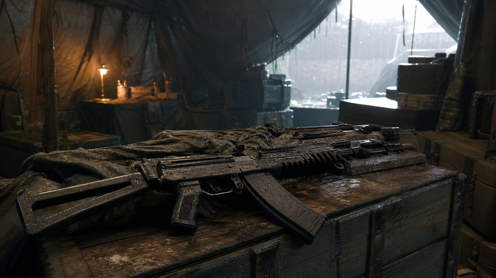

Les carabines de la source de référence
Les carabines forment bien une famille de collection dans la source de référence : elle en recense huit. Ce qui les distingue des fusil d'assaut, ce n'est ni le calibre ni le mode de tir, mais la combinaison de trois traits — une cadence modérée, une portée moyenne à longue, et une ligne de tir destinée à tenir l'axe plutôt qu'à l'emporter.
| Arme | Calibre | Cadence | Ergonomie | Portée (m) | Recul vert. | Modes de tir |
|---|---|---|---|---|---|---|
| BM59 Carbine | 7.62×51mm | 300 | 48 | 62 | 34 | Semi-automatique |
| M14 Carbine | 7.62×51mm | 350 | 45 | 66 | 44 | Semi-automatique |
| M16 Carbine | 5.56×45mm | 660 | 53 | 73 | 64 | Semi-automatique / Rafale 3 balles |
| M96 Carbine | 5.56×45mm | 400 | 50 | 57 | 59 | Rafale 3 balles |
| Mini14 Carbine | 5.56×45mm | 400 | 60 | 67 | 72 | Semi-automatique |
| SA85M Carbine | 7.62×39mm | 300 | 42 | 54 | 51 | Semi-automatique |
| SKS Carbine | 7.62×39mm | 300 | 46 | 58 | 42 | Semi-automatique |
| SVTU Carbine | 7.62×54mm | 200 | 30 | 66 | 30 | Semi-automatique |
Ce que le tableau raconte. La dispersion des cadences est large : de 200 coups par minute pour la SVTU à 660 pour la M16. Et la dispersion des portées l'est davantage : de 54 mètres pour la SA85M à 73 pour la M16. Entre les deux, il y a une ligne de crête très nette. La M16 est l'exception de la famille : 660 coups par minute, 73 mètres de portée et 53 points d'ergonomie. Elle cumule les trois meilleurs chiffres de la catégorie, ce qui en fait l'arme la plus difficile à remplacer dans son créneau.
Les deux extrêmes à ne pas confondre. La SVTU, avec 30 points d'ergonomie seulement, est la moins maniable de la famille : son recul vertical de 30 est faible, mais sa cadence de 200 coups par minute et sa lourdeur en font une arme de patient. À l'opposé, la Mini14 offre 67 mètres de portée et 60 points d'ergonomie pour une cadence modeste de 400 : c'est la carabine de précision du groupe, et la meilleure option quand on cherche à poser un tir sans se-discovery à l=textbook.
1. Rôle dans le meta S7
Le SKS (C-tier, 80 000 K) est le roi du premier wipe : dégâts 7.62 supérieurs aux AR 5.45/5.56, prix ridicule, recul gérable. En S7, c'est l'arme idéale pour apprendre la pénétration des munitions avant d'investir dans un build A545 complet. Son successeur spirituel reste le fan de semi-auto à 7.62.
2. Conseils de jeu
- Munitions d'abord : en S7, la RNG de pénétration T5/T6 a disparu — la bonne mun gagne presque toujours. Tier 3 minimum, Tier 4-5 pour les modes haut de gamme.
- Caps par mode : Normal = T4 max, Lockdown = T5 max, Forbidden = T6. Adaptez votre kit au lobby, pas à votre ego.
- Montez des bandes LP puis PS selon votre budget — les meilleures muns au meilleur prix.
- Semi-auto discipliné : « doublé-single » cassez les plaques T3-T4 proprement.
- Upgrade path : SKS → AK-15SC → A545 quand le bankroll suit.
À retenir
Le SKS est une école : il vous apprend la discipline des tirs — emportez cette discipline sur l'A545.
Meta complet
Croisez ces analyses avec la Tier List S7 complète et nos builds recommandés (A545 900 RPM, AK-12 laser budget, M24 oneshot).
3. Les règles qui dictent le carabine
La carabine est le compromis qui a survécu à tous les changements de saison : la maniabilité d'une arme de poing, la puissance d'un fusil, le tout dans un format qui passe sous une porte. C'est l'arme des joueurs qui veulent une seule arme pour toute la partie.
- Plafonds par mode : Normal = T4 maximum, Lockdown = T5 maximum, Forbidden = T6. Le choix du mode décide de votre tier avant même votre budget.
- Plafond de valeur : 900 000 K d'équipement en Lockdown. Au-delà, le raid refuse de démarrer.
- RNG de pénétration supprimée : depuis la S7, la bonne munition traverse presque toujours. comptez sur votre munition, pas sur la chance.
- TTK allongé, headshots récompensés : la précision compte davantage qu'en S6. Le premier tir placé vaut plus qu'une rafale.
4. Les munitions à connaître
| Munition | Armes | Ce qu'elle change |
|---|---|---|
| 5.56×45mm AP (T5) | AK-12, AKS-74U | Le cœur de la classe : précision et pénétration sans exploser le budget. |
| 7.62×39mm BP (T4) | SKS, AKS-74N | Idéale en farm, moins en duel contre armure T5. |
| 9×39mm SP-6 (T4) | VSS, Vintorez | La munition subsonique : silencieuse, et trajectoire difficile à suivre. |
| 5.45×39mm PP (T3) | Banshee, AKS-74U | Rendement maximal pour le train de vie quotidien. |
5. Quel kit pour quel budget
| Profil | Budget | Configuration | Usage |
|---|---|---|---|
| Farming | 60 000 – 90 000 K | SKS en 7.62×39 BP, sac léger | Extractions Farm et Armory |
| Polyvalence | 110 000 – 200 000 K | AK-12 modérée, gilet T4 | Un seul kit pour tout le jeu |
| Discret | 150 000 – 300 000 K | VSS, 9×39 SP-6, casque léger | Approches discrètes |
6. Les erreurs qui coûtent cher
- Partir en 5.56 sansfonds pour la munition : une carbine qui claque à chaque tir est une carbine inutilisable.
- Ignorer la différence entre 9×39 et 9×19 : ce ne sont pas les mêmes munitions, et le choix change complètement le TTK.
- Choisir un canon long sur une carabine : vous perdez le seul avantage de la classe.
- Oublier le grip vertical : sur une carabine courte, c'est lui qui rend le tir contrôlable.
7. FAQ
Carabine ou fusil d'assaut ?
La carabine est plus maniable et plus économe, mais perd en portée et en dégâts bruts. Sur les petites cartes (Farm, TV Station), elle gagne souvent.
Pourquoi le SKS est si rentable ?
Prix d'entrée bas, 7.62×39 très efficace en T4, et un profil de recul qu'on peut apprendre en trois heures.
Les carabines valent-elles un kit en Lockdown ?
Oui, mais avec une armure T5 et une munition T5. En dessous, vous restez en Normal.
C'est quoi la différence entre 9×19 et 9×39 ?
La 9×19 est une arme de poing. La 9×39 est une munition de fusil : beaucoup plus puissante, et c'est elle qu'utilise la VSS.